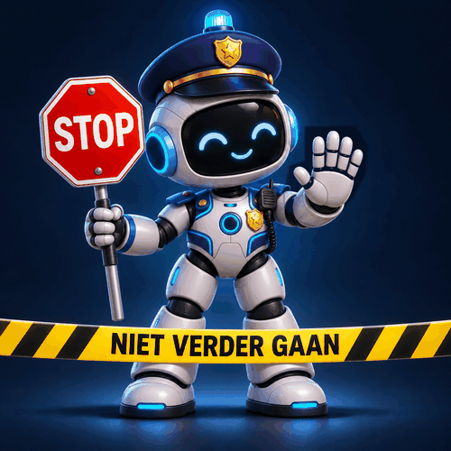

Deze pagina mag je niet bezoeken
Stop! Dit gedeelte is afgesloten.
Ga terug naar de vorige pagina.
Sluit dit tabblad om terug te gaan.

Stop! Dit gedeelte is afgesloten.
Ga terug naar de vorige pagina.
Sluit dit tabblad om terug te gaan.